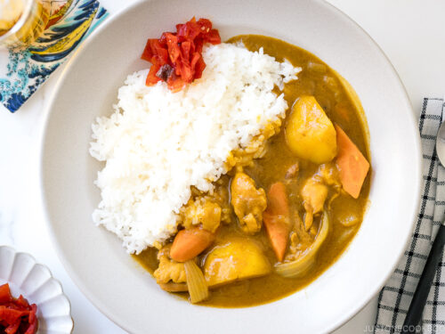

Japanese Curry

Description
This classic dish is a quick and easy to make. Curry is a traditional dish that first orginated from India.
The japanese curry consists of potato, carrot, chicken and pickled radish.
Ingredients
- Chicken breast
- Potato
- Carrot
- Pickled Radish
- S&B curry blocks
Steps
- Prepare ingredients. Peel carrots and potatoes. Chop onion. Chop chicken breast into thin slices.
- Heat a pan with oil.
- Place ingredients into pan
- Add S&B curry blocks and let pan simmer for 12 mins
- Serve and enjoy.